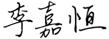

会长致辞
返回首页中华民族历史悠久以及思想伟大，是因为爱国主义作为精神支柱起到了重要奠基作用。爱国主义是一种深厚的情感，更是一种对于自我归属的国土和民族所萌生的依恋之情，如同孩子对母亲的情感，朴实而真切。这种情感在历史的长河中，经过千百年的凝聚、无数次的激发，最终被整个民族的行为思想所认同，并升华为爱国主义情怀，同时它也是一种精神力量，对国家、民族的生存和发展具有擎天立地的巨大动力。
中华国际商会秉承爱我中华、商融国际的创办宗旨，弘扬民族文化，延续璀璨文明，维系及巩固全球华人华侨的纽带关系，透过与海外各国华人华侨的交流互动，持续向海外华人华侨弘扬文化精粹，促使华人华侨及后裔深得中华文化底蕴。同时也将联合世界各地的协同组织，举办蕴含中华文化元素的宣传活动，令世界各国人民更直接透彻的认识中华文化的源远流长及博大精深，塑造中华民族博爱谦和的高尚形象，让全世界各国人民都能感受到中华民族文化的高度共融性，以此达成中华民族复兴、全球人类大同。商会更是融合全球华人的大家庭，亦是以商聚友、融汇结谊的交流互助平台，同时也是弘扬中华民族文化、推动世界文明进步的团结纽带。
